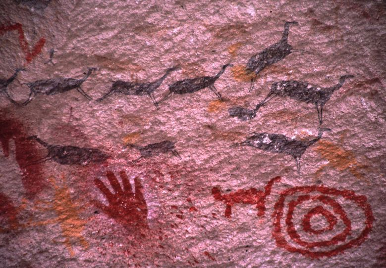

Cache Virtual GCARG
A partir del 01 de Enero del 2020, Geocaching Argentina cuenta con un Cache Virtual propio como resultado de un proceso de selección y votación por parte de los participantes de esta actividad en el país.
Este proceso se llevó a cabo a lo largo de los últimos tres meses sometiendo a los candidatos al voto publico. Hoy 02 de Enero del 2020 damos a conocer al ganador de esta búsqueda.
UBICACIÓN GANADORA

Acceso al Cache Virtual - Geocaching Oficial
La cueva de las Manos es un sitio arqueológico y de pinturas rupestres que se encuentra en el profundo cañadón del río Pinturas, en el departamento Lago Buenos Aires, al oeste de la Provincia de Santa Cruz, en Argentina.
Su interés radica en la belleza de las pinturas rupestres, así como en su gran antigüedad: hasta el momento, las inscripciones más antiguas están fechadas el año 7350 a. C. Se trata de una de las expresiones artísticas más antiguas de los pueblos sudamericanos y ha sido declarada Patrimonio de la Humanidad por la Unesco.
La cueva de las Manos pertenece a una serie de sitios arqueológicos americanos, como Monte Verde (Chile), Pedra Furada (Brasil) y Piedra Museo (Argentina), entre otros que están cuestionando la tradicional teoría del poblamiento tardío de América, para sostener una teoría del poblamiento temprano (pre-Clovis).
Otro asentamiento cercano fue ubicado en Los Toldos, también en la provincia de Santa Cruz, con restos que datan de 12 500 AP (10 500 a. C.).

/s3.amazonaws.com/arc-wordpress-client-uploads/infobae-wp/wp-content/uploads/2018/10/09181801/Cueva-Las-Manos-5.jpg)
Para acceder a la Cueva se puede utilizar la emblemática ruta 40 y, al llegar, los turistas pueden recorrer primero el Centro de Interpretación, cuyo guion museológico fue realizado por especialistas del Instituto Nacional de Antropología y Pensamiento Latinoamericano (INAPL). Allí se ofrece un panorama sobre el modo de vida de las poblaciones originarias, las características medioambientales y la historia de los primeros exploradores. Además, se puede ver una excavación arqueológica y conocer las técnicas del arte rupestre. El Centro le permite a aquellas personas que visitan el lugar y que por alguna razón no pueden recorrer el largo circuito entre rocas un espacio para acceder al conocimiento del lugar. Otro punto imperdible de este viaje al pasado es visitar el Museo de Arqueología “Carlos J. Gradin” en la localidad de Perito Moreno, que fue creado a instancias de los vecinos y que lleva el nombre del que fuera uno de los primeros investigadores de la Cueva de las Manos.